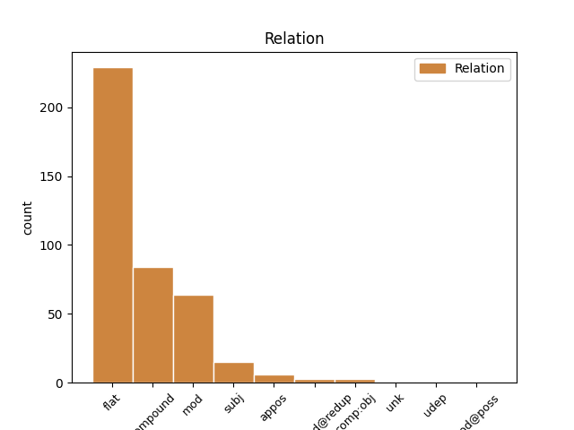
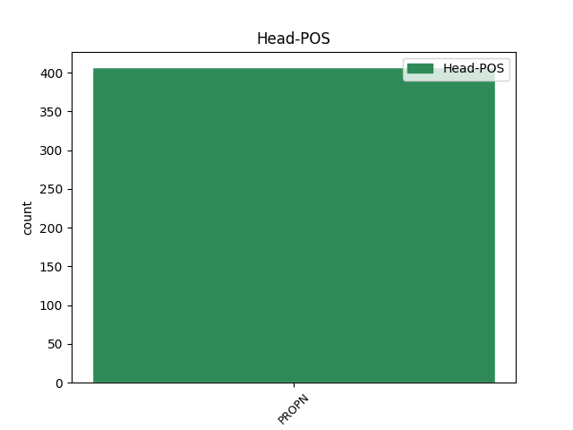
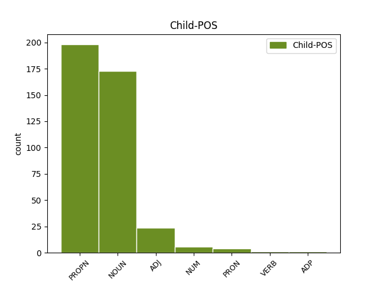

Distribution of features within this leaf



Agreement Rules sorted by frequency.
- When the dependent token is the flat multiword expression(flat) of the head token, and the head token is PROPN
1 Ancak _ _ _ _ 0 _ _ _
2 , _ _ _ _ 0 _ _ _
3 dün _ _ _ _ 0 _ _ _
4 bu _ _ _ _ 0 _ _ _
5 programı _ _ _ _ 0 _ _ _
6 Gül'ün _ _ _ _ 0 _ _ _
7 eşi _ _ _ _ 0 _ _ _
8 Hayrünnisa _ _ _ _ 0 _ _ _
9 Gül'ün _ _ _ _ 0 _ _ _
10 türbanı _ _ _ _ 0 _ _ _
11 olması _ _ _ _ 0 _ _ _
12 nedeniyle _ _ _ _ 0 _ _ _
13 gerçekleştirmeyen _ _ _ _ 0 _ _ _
14 ve _ _ _ _ 0 _ _ _
15 geleneği _ _ _ _ 0 _ _ _
16 bozan _ _ _ _ 0 _ _ _
17 Genelkurmay _ _ _ _ 0 _ _ _
18 Başkanı _ _ _ _ 0 _ _ _
19 Org _ _ _ _ 0 _ _ _
20 . _ _ _ _ 0 _ _ _
21 Hilmi _ _ _ _ 0 _ _ _
22 Özkök'ün _ _ _ _ 0 _ _ _
23 eşi _ _ _ _ 0 _ _ _
24 Özenç Özenç PROPN Prop Case=Nom|Number=Sing|Person=3 0 _ _ _
25 Özkök Özkök PROPN Prop Case=Nom|Number=Sing|Person=3 24 flat _ SpaceAfter=No
26 , _ _ _ _ 0 _ _ _
27 YAŞ _ _ _ _ 0 _ _ _
28 üyelerinin _ _ _ _ 0 _ _ _
29 eşlerine _ _ _ _ 0 _ _ _
30 öğle _ _ _ _ 0 _ _ _
31 yemeği _ _ _ _ 0 _ _ _
32 vermedi _ _ _ _ 0 _ _ _
33 . _ _ _ _ 0 _ _ _
1 ANAP _ _ _ _ 0 _ _ _
2 İstanbul İstanbul PROPN Prop Case=Nom|Number=Sing|Person=3 0 _ _ _
3 İl _ _ _ _ 0 _ _ _
4 Benokan Benokan PROPN Prop Case=Nom|Number=Sing|Person=3 2 compound _ _
5 basın _ _ _ _ 0 _ _ _
6 toplantısına _ _ _ _ 0 _ _ _
7 Çelebi'nin _ _ _ _ 0 _ _ _
8 yanı _ _ _ _ 0 _ _ _
9 sıra _ _ _ _ 0 _ _ _
10 , _ _ _ _ 0 _ _ _
11 diğer _ _ _ _ 0 _ _ _
12 genel _ _ _ _ 0 _ _ _
13 başkan _ _ _ _ 0 _ _ _
14 adayları _ _ _ _ 0 _ _ _
15 Lütfullah _ _ _ _ 0 _ _ _
16 Kayalar _ _ _ _ 0 _ _ _
17 ve _ _ _ _ 0 _ _ _
18 Ali _ _ _ _ 0 _ _ _
19 Talip _ _ _ _ 0 _ _ _
20 Özdemir _ _ _ _ 0 _ _ _
21 de _ _ _ _ 0 _ _ _
22 katıldı _ _ _ _ 0 _ _ _
23 . _ _ _ _ 0 _ _ _
1 Ancak _ _ _ _ 0 _ _ _
2 , _ _ _ _ 0 _ _ _
3 dün _ _ _ _ 0 _ _ _
4 bu _ _ _ _ 0 _ _ _
5 programı _ _ _ _ 0 _ _ _
6 Gül'ün _ _ _ _ 0 _ _ _
7 eşi _ _ _ _ 0 _ _ _
8 Hayrünnisa _ _ _ _ 0 _ _ _
9 Gül'ün _ _ _ _ 0 _ _ _
10 türbanı _ _ _ _ 0 _ _ _
11 olması _ _ _ _ 0 _ _ _
12 nedeniyle _ _ _ _ 0 _ _ _
13 gerçekleştirmeyen _ _ _ _ 0 _ _ _
14 ve _ _ _ _ 0 _ _ _
15 geleneği _ _ _ _ 0 _ _ _
16 bozan _ _ _ _ 0 _ _ _
17 Genelkurmay _ _ _ _ 0 _ _ _
18 Başkanı _ _ _ _ 0 _ _ _
19 Org _ _ _ _ 0 _ _ _
20 . _ _ _ _ 0 _ _ _
21 Hilmi _ _ _ _ 0 _ _ _
22 Özkök'ün _ _ _ _ 0 _ _ _
23 eşi eş ADJ NAdj Case=Nom|Number=Sing|Number[psor]=Sing|Person=3|Person[psor]=3 24 mod _ _
24 Özenç Özenç PROPN Prop Case=Nom|Number=Sing|Person=3 0 _ _ _
25 Özkök _ _ _ _ 0 _ _ _
26 , _ _ _ _ 0 _ _ _
27 YAŞ _ _ _ _ 0 _ _ _
28 üyelerinin _ _ _ _ 0 _ _ _
29 eşlerine _ _ _ _ 0 _ _ _
30 öğle _ _ _ _ 0 _ _ _
31 yemeği _ _ _ _ 0 _ _ _
32 vermedi _ _ _ _ 0 _ _ _
33 . _ _ _ _ 0 _ _ _
1 Harun _ _ _ _ 0 _ _ _
2 Yahya _ _ _ _ 0 _ _ _
3 ve _ _ _ _ 0 _ _ _
4 yazarlarının _ _ _ _ 0 _ _ _
5 herbiri herbiri PRON Quant Case=Nom|Number=Sing|Number[psor]=Sing|Person=3|Person[psor]=3|PronType=Ind 9 subj _ _
6 sanki _ _ _ _ 0 _ _ _
7 reenkarnasyona _ _ _ _ 0 _ _ _
8 uğramış _ _ _ _ 0 _ _ _
9 Berkeley Berkeley PROPN Prop Case=Nom|Number=Sing|Person=3 0 _ _ _
10 ! _ _ _ _ 0 _ _ _
11 İlgili _ _ _ _ 0 _ _ _
12 okura _ _ _ _ 0 _ _ _
13 , _ _ _ _ 0 _ _ _
14 Bertrand _ _ _ _ 0 _ _ _
15 Russell'ın _ _ _ _ 0 _ _ _
16 Türkçe'ye _ _ _ _ 0 _ _ _
17 de _ _ _ _ 0 _ _ _
18 çevrilmiş _ _ _ _ 0 _ _ _
19 olan _ _ _ _ 0 _ _ _
20 The _ _ _ _ 0 _ _ _
21 History _ _ _ _ 0 _ _ _
22 of _ _ _ _ 0 _ _ _
23 Western _ _ _ _ 0 _ _ _
24 Philosophy _ _ _ _ 0 _ _ _
25 ad _ _ _ _ 0 _ _ _
26 lı _ _ _ _ 0 _ _ _
27 kitabının _ _ _ _ 0 _ _ _
28 Berkeley _ _ _ _ 0 _ _ _
29 bölümünü _ _ _ _ 0 _ _ _
30 okumalarını _ _ _ _ 0 _ _ _
31 salık _ _ _ _ 0 _ _ _
32 veririm _ _ _ _ 0 _ _ _
33 . _ _ _ _ 0 _ _ _
1 Rusça Rusça PROPN Prop Case=Nom|Number=Sing|Person=3 0 _ _ _
2 lahana lahana NOUN Noun Case=Nom|Number=Sing|Person=3 1 appos _ _
3 demek _ _ _ _ 0 _ _ _
4 olan _ _ _ _ 0 _ _ _
5 Kapuska _ _ _ _ 0 _ _ _
6 yemek _ _ _ _ 0 _ _ _
7 oldu _ _ _ _ 0 _ _ _
8 . _ _ _ _ 0 _ _ _
1 Davetin _ _ _ _ 0 _ _ _
2 Aralık _ _ _ _ 0 _ _ _
3 2002'de _ _ _ _ 0 _ _ _
4 Ankara'ya _ _ _ _ 0 _ _ _
5 gelerek _ _ _ _ 0 _ _ _
6 Erdoğan _ _ _ _ 0 _ _ _
7 ile _ _ _ _ 0 _ _ _
8 görüşen _ _ _ _ 0 _ _ _
9 Yunanistan'ın _ _ _ _ 0 _ _ _
10 ana _ _ _ _ 0 _ _ _
11 muhalefet _ _ _ _ 0 _ _ _
12 lideri lider NOUN Noun Case=Nom|Number=Sing|Number[psor]=Sing|Person=3|Person[psor]=3 13 comp:obj _ _
13 Karamanlis Karamanlis PROPN Prop Case=Nom|Number=Sing|Person=3 0 _ _ _
14 tarafından _ _ _ _ 0 _ _ _
15 yapıldığını _ _ _ _ 0 _ _ _
16 kaydeden _ _ _ _ 0 _ _ _
17 Dişli _ _ _ _ 0 _ _ _
18 , _ _ _ _ 0 _ _ _
19 buna _ _ _ _ 0 _ _ _
20 yönelik _ _ _ _ 0 _ _ _
21 çalışmalarda _ _ _ _ 0 _ _ _
22 bulunulduğunu _ _ _ _ 0 _ _ _
23 bildirdi _ _ _ _ 0 _ _ _
24 . _ _ _ _ 0 _ _ _
1 Allah Allah PROPN Prop Case=Nom|Number=Sing|Person=3 0 _ _ _
2 Allah Allah PROPN Prop Case=Nom|Number=Sing|Person=3 1 compound@redup _ SpaceAfter=No
3 , _ _ _ _ 0 _ _ _
4 bu _ _ _ _ 0 _ _ _
5 da _ _ _ _ 0 _ _ _
6 nereden _ _ _ _ 0 _ _ _
7 çıktı _ _ _ _ 0 _ _ _
8 ? _ _ _ _ 0 _ _ _
9 diye _ _ _ _ 0 _ _ _
10 sormadık _ _ _ _ 0 _ _ _
11 , _ _ _ _ 0 _ _ _
12 şaşırmadık _ _ _ _ 0 _ _ _
13 . _ _ _ _ 0 _ _ _
Disagree Examples:
1 Ramiz _ _ _ _ 0 _ _ _
2 yerinden _ _ _ _ 0 _ _ _
3 kalkmış _ _ _ _ 0 _ _ _
4 Naci Naci PROPN Prop Case=Nom|Number=Sing|Person=3 0 _ _ _
5 Beyin bey NOUN Noun Case=Gen|Number=Sing|Person=3 4 flat _ _
6 yanına _ _ _ _ 0 _ _ _
7 kadar _ _ _ _ 0 _ _ _
8 sokulmuştu _ _ _ _ 0 _ _ _
9 . _ _ _ _ 0 _ _ _
1 Aydınlık Aydınlık PROPN Prop Case=Nom|Number=Sing|Person=3 0 _ _ _
2 gazetesinde gazete NOUN Noun Case=Loc|Number=Sing|Number[psor]=Sing|Person=3|Person[psor]=3 1 flat _ _
3 konuştuğu _ _ _ _ 0 _ _ _
4 muhabirler _ _ _ _ 0 _ _ _
5 , _ _ _ _ 0 _ _ _
6 Biz _ _ _ _ 0 _ _ _
7 size _ _ _ _ 0 _ _ _
8 yardımcı _ _ _ _ 0 _ _ _
9 olalım _ _ _ _ 0 _ _ _
10 , _ _ _ _ 0 _ _ _
11 dediler _ _ _ _ 0 _ _ _
12 . _ _ _ _ 0 _ _ _
1 Bayındır Bayındır PROPN Prop Case=Nom|Number=Sing|Person=3 0 _ _ _
2 Sokak'ta Sokak PROPN Prop Case=Loc|Number=Sing|Person=3 1 flat _ _
3 ki _ _ _ _ 0 _ _ _
4 bekar _ _ _ _ 0 _ _ _
5 evimden _ _ _ _ 0 _ _ _
6 çıktım _ _ _ _ 0 _ _ _
7 . _ _ _ _ 0 _ _ _
1 Tunguzların _ _ _ _ 0 _ _ _
2 on _ _ _ _ 0 _ _ _
3 bir _ _ _ _ 0 _ _ _
4 kolundan _ _ _ _ 0 _ _ _
5 biri bir NUM NNum Case=Acc|Number=Sing|NumType=Card|Person=3 6 subj _ _
6 Evenler Evenler PROPN Prop Case=Nom|Number=Sing|Person=3 0 _ _ _
7 . _ _ _ _ 0 _ _ _
1 İşçi _ _ _ _ 0 _ _ _
2 Partisi _ _ _ _ 0 _ _ _
3 ve _ _ _ _ 0 _ _ _
4 Aydınlık Aydınlık PROPN Prop Case=Nom|Number=Sing|Person=3 0 _ _ _
5 gazetesinin gazete NOUN Noun Case=Gen|Number=Sing|Number[psor]=Sing|Person=3|Person[psor]=3 4 flat _ _
6 çeşitli _ _ _ _ 0 _ _ _
7 davaları _ _ _ _ 0 _ _ _
8 dahil _ _ _ _ 0 _ _ _
9 belalı _ _ _ _ 0 _ _ _
10 denebilecek _ _ _ _ 0 _ _ _
11 pek _ _ _ _ 0 _ _ _
12 çok _ _ _ _ 0 _ _ _
13 davayı _ _ _ _ 0 _ _ _
14 alıp _ _ _ _ 0 _ _ _
15 , _ _ _ _ 0 _ _ _
16 üzerine _ _ _ _ 0 _ _ _
17 gitmekten _ _ _ _ 0 _ _ _
18 çekinmiyordu _ _ _ _ 0 _ _ _
19 . _ _ _ _ 0 _ _ _